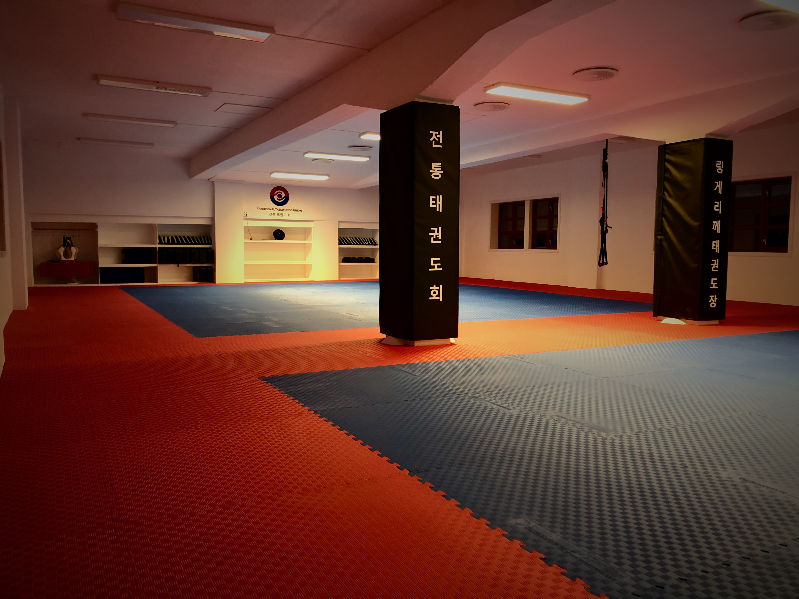

Innlegg
Gradering sommer 2021

Gradering sommer 2021
Klubben har besluttet at vi skal kjøre en gradering før sommerferien. Dette året har vært litt spesielt så vi må gjøre noen tilpassinger. Vi har alle hatt noen perioder hvor vi ikke kunne trene. Men innenfor den tiden vi har hatt åpent har noen trent mye og derfor mener vi at de skal få lov til å gradere dersom de ønsker.
For å gradere dette ½ året setter vi følgende krav.
Tiger Alle som har lyst kan gradere.
Barn 1 Du bør ha deltatt på minimum 6 treninger.
Barn 2 Du bør ha deltatt på minimum 10 treninger.
Gruppe under 20 år Du må ha minimum 10 treninger for å gradere.
Over 20 år Ingen gradering denne sesongen.
Er du i tvil om du kan gradere så ta kontakt med Geir via ringeriketkd@gmail.com eller spør en av instruktørene i klubben så kan de sjekke oppmøtelista. Husk det er fortsatt noen treninger igjen av sesongen.
Det vil komme informasjon om priser og påmelding på hjemmesiden og via facebook snarlig. Følg med.
Gradering i Ringerikshallen
Tiger
- juni. Vi avslutter sesongen i Ringerikshallen med gradering istedenfor siste trening.
- juni. Vi avslutter sesongen i Ringerikshallen med gradering istedenfor siste trening.